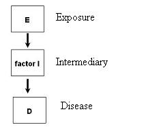
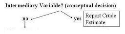

Lead Author(s):
As seen in the diagram below a variable that is an intermediate step in the causal path under study
- between the exposure in question and a disease
- is not a confounding variable.

DESPITE BEING ASSOCIATED WITH BOTH EXPOSURE AND OUTCOME,
- FACTOR I IS NOT A CONFOUNDER.
- IT IS ON THE PATHWAY UNDER STUDY.
- IT IS AN INTERMEDIARY VARIABLE.
Often na\xEFve investigators think of an intermediary variable as a confounder -
- in other words, a variable that sits right on the causal pathway you are investigating.
You might be tempted to adjust for it if you naively looked at basic requirements of a confounding factor (associated with disease and exposure).
The issue with confounding is not just that you want to adjust for factors associated with the exposure and the outcome
- but it is more aptly that you want to exclude other pathways not under study.
Therefore, if you believe E caused D through some factor I and this is the pathway you are interested in studying,
- you would not want to treat factor I as a confounder.
How do you determine if it is and intermediary variable or a confounder?
(1) Ask: What is your research question?
(2) Ask: What is the pathway under investigation?
What Is Your Research Question?
An excellent example of determining your research question can be found in Taylor's Study of the CCR5 receptor in HIV.
To determine if CD4 count is an intermediary variable we ask:
- Is CCR5 associated with progression to AIDS, irrespective of mechanism?
To determine if CD4 count is a confounding variable we ask:
- Is CCR5 asssocated with progression to AIDS, independent of CD4 count?
What Is the Pathway Under Investigation?
An excellent example of determining the pathway under investigation can be found in Pathway Under Investigation - CAD.
If you do not care about the exact pathway or you are only thinking about one pathway by which exercise can influence the development of heart disease, and HDL was right in the middle of this pathway,
- then HDL is an intermediary variable and we would not want to control for it.
If the pathway you are interested in pathway other than HDL,
The first decision you have to make is a conceptual one based upon your knowledge of the biological or behavioral system and the research question at hand.
- If you are conceptualizing the third variable as an intermediary variable, then you would not control for it.
- You would stop right here and just report the crude or unadjusted association.

References